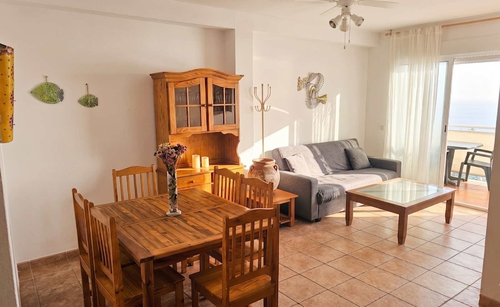
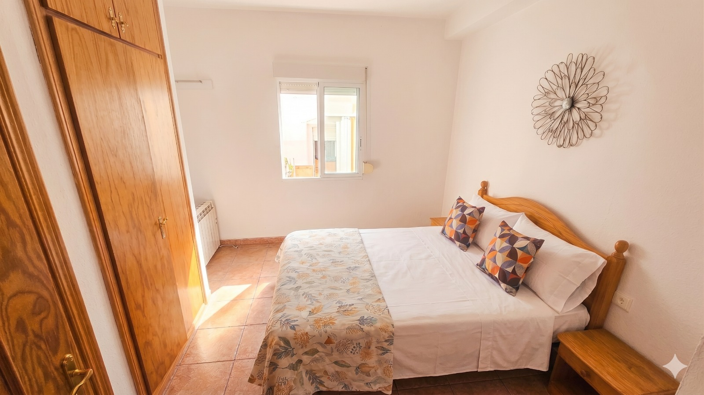
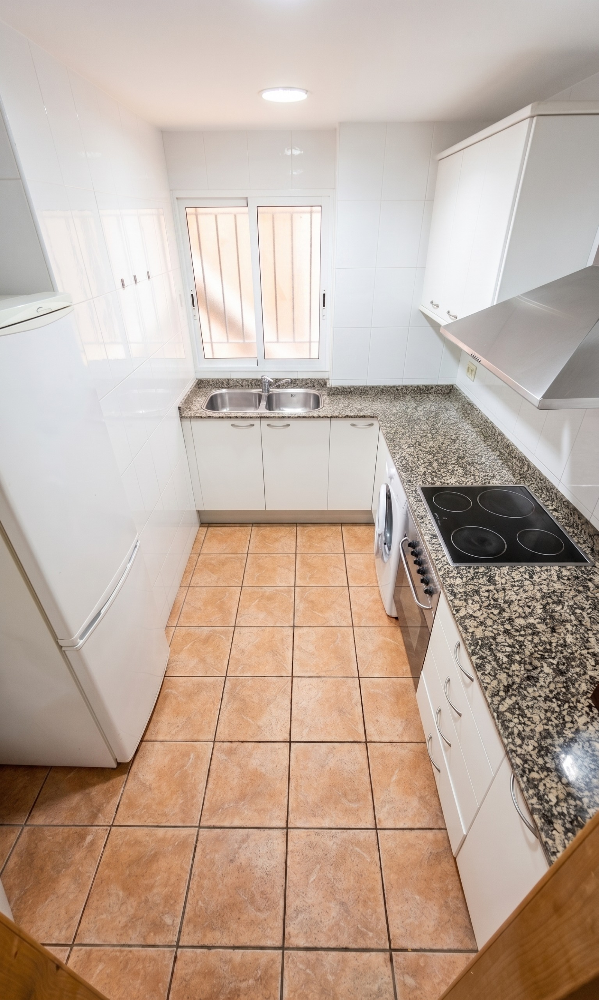
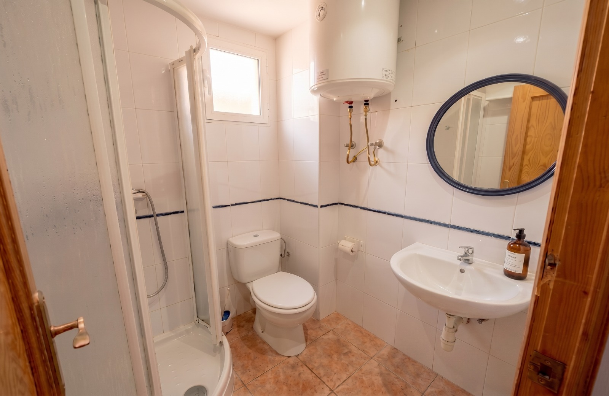
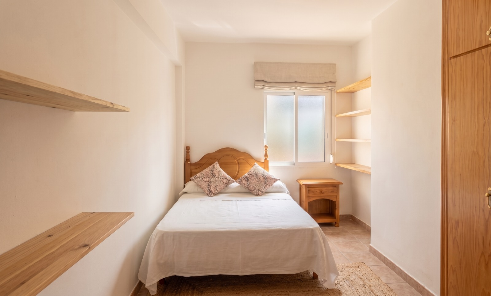
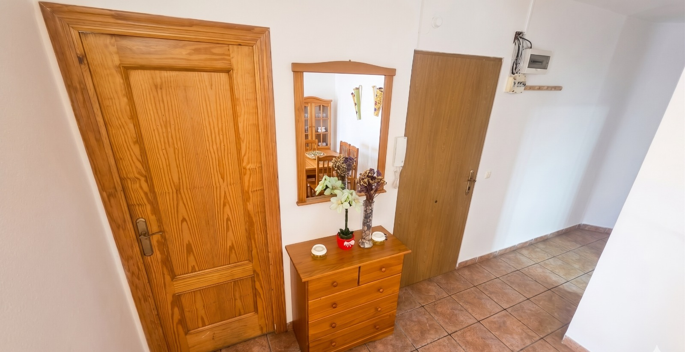
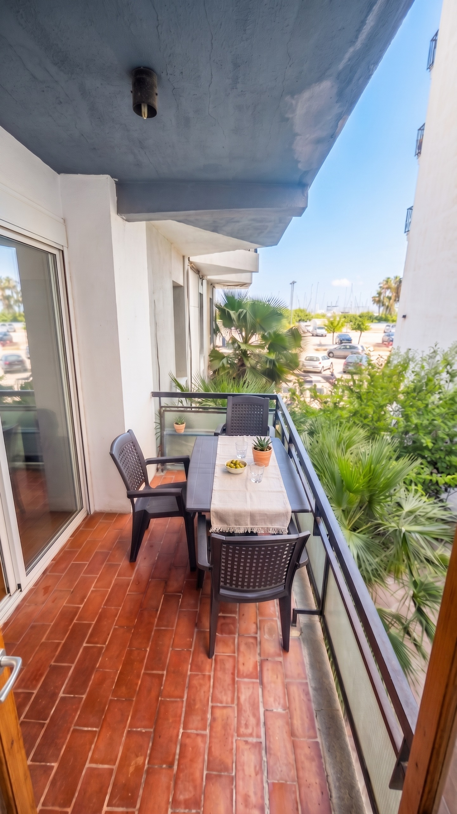

Una invitación a pausar el tiempo en el corazón de Burriana.

Habitaciones donde la simplicidad se encuentra con la elegancia para un descanso profundo.

Equipamiento moderno en un entorno cálido.

Espacios de aseo diseñados para el relax.

Amplitud y confort en cada rincón.

Un recibidor que anticipa la calma del hogar.

Tu espacio privado para conectar con la brisa mediterránea.
Consulte nuestro calendario sincronizado con Airbnb para asegurar sus fechas.